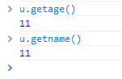
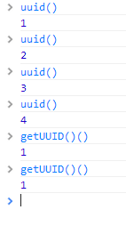

前言
过年期间在家喝酒有点厉害，刚刚来公司这边就变成“歪脖子”了，整个肩膀很疼啊，所以程序员平时要多运动才行
开年后也很忙，一方面然后又搬了个家，另一方面最近就算有所得，都是零零碎碎，不然就是不够深入，于是就没有什么总结了
最近在工作中碰到几个闭包的问题，虽然我对闭包了解不是太深，但是觉得还是可以拿出来说下，如果有何问题，请指正
闭包的产生
function a() { var i = 0; function b() { console.log(i); } return b; } var c = a(); c();
一般来说，当一个函数内部匿名函数用到了自己的变量，并且这个匿名函数被返回了，这就建立了一个闭包，比如上面的代码
这个时候，就算a调用结束被销毁，i也会存在不会消失
当a定义时，js解释器会将函数a的作用域链设置为定义a时所在环境
当执行a时，a会进入相应的执行环境，执行环境创建后才会有作用域scope属性，然后创建一个活动对象，然后将其置为作用域链的顶端
现在a的作用域链就有a的活动对象以及window
然后为活动对象加入arguments属性
这个时候a的返回函数b的引用给了c，b的作用域链包含a的活动对象引用，所以c可以访问到a的活动对象，这个时候a返回后不会被GC
以上便是对闭包的简单介绍，说多了就容易绕进去了，我们这里简单结束，然后进入实际的场景加以说明
实际场景
同事的疑惑
之前一个同事让我去看一个代码：
var User = function (opts) { var scope = this; for (var k in opts) { scope['get' + k] = function () { return opts[k]; }; scope['set' + k] = function (v) { return opts[k] = v; }; } }; var u = new User({ name: '测试', age: 11 });
代码本意很简单，希望对传入的对象生成get/set方法，但是他这里就遇到一个闭包问题：

导致这个问题的原因就是返回值内部使用的k永远是“age”，这个k便是由于getXXX函数共享的活动对象，这里修改也比较简单
var User = function (opts) { var scope = this; for (var k in opts) { (function (k) { scope['get' + k] = function () { return opts[k]; }; scope['set' + k] = function (v) { return opts[k] = v; }; })(k); } }; var u = new User({ name: '测试', age: 11 });
在for循环内部创建一个立即执行函数，将k传入，这个时候getXXX函数共享的就是各个匿名函数的“k”了
生成唯一ID
生成唯一ID也是闭包一个经典的使用方式
function getUUID() { var id = 0; return function () { return ++id; } } var uuid = getUUID();
这段代码其实非常有意义，我们在浏览器中不停的执行uuid()确实会得到不同的值，但是如果我们只使用getUUID()()的话每次值仍然一样

导致这个问题的原因是，我们将getUUID执行后的结果赋予uuid，这个时候uuid就保存对其中匿名函数的引用，而匿名函数保存着getUUID的活动对象，所以id一直未销毁
而直接调用的话，每次都会重新生成活动对象，所以id是不能保存的
一段有意思的代码
Util.tryUrl = function (url) { var iframe = document.createElement('iframe'); iframe.height = 1; iframe.width = 1; iframe.frameBorder = 0; iframe.style.position = 'absolute'; iframe.style.left = '-9999px'; iframe.style.top = '-9999px'; document.body.appendChild(iframe); Util.tryUrl = function (url) { iframe.src = url; }; U.tryUrl(url); };
这段代码十分有意思，当我们第一次调用时候会创建一个iframe对象，而第二次调用时候iframe对象就存在了，我们这里将代码做一定简化后
var getUUID = function () { var i = 0; getUUID = function () { return i++; }; return getUUID(); };
这样调整后，其实并不存在返回函数，但是我们其实依然形成了闭包
事件委托与闭包
我们都知道jquery的on是采用的事件委托，但是真正了解什么事事件委托仍然要花一定功夫，于是我们这里来试试
闭包是事件委托实现的基石，我们最后就以事件委托深入学习下闭包结束今天闭包的学习吧
加入我们页面下有如下dom结构
<input id="input" value="input" type="button" /> <div id="div"> 我是div</div> <span id="span">我是span</span> <div id="wrapper"> <input id="inner" value="我是inner" type="button"/> </div>
我们使用zepto的话是使用如下方式绑定事件
$.on('click', 'selector', fn)
我们这里没有zepto就自己简单实现吧
事件委托原理
首先事件委托实现的基石是事件冒泡，我们在页面的每次点击最终都会冒泡到其父元素，所以我们在document处可以捕捉到所有的事件
知道了这个问题后，我们可以自己实现一个简单的delegate事件绑定方式：
function delegate(selector, type, fn) { document.addEventListener(type, fn, false); } delegate('#input', 'click', function () { console.log('ttt'); });
这段代码是最简单的实现，首先我们无论点击页面什么地方都会执行click事件，当然这显然不是我们想要看到的情况，于是我们做处理，让每次点击时候触发他应有的事件
这里有几个问题比较尖锐：
① 既然我们事件是绑定到document上面，那么我怎么知道我现在是点击的什么元素呢
② 就算我能根据e.target获取当前点击元素，但是我怎么知道是哪个元素具有事件呢
③ 就算我能根据selector确定当前点击的哪个元素需要执行事件，但是我怎么找得到是哪个事件呢
如果能解决以上问题的话，我们后面的流程就比较简单了
确定点击元素是否触发事件
首先，我们点击时候可以使用e.target获取当前点击元素，然后再根据selector依次寻找其父DOM，如果找得到就应该触发事件
因为这些都是要在触发时候才能决定，所以我们需要重写其fn回调函数，于是简单操作后：
var arr = []; var slice = arr.slice; var extend = function (src, obj) { var o = {}; for (var k in src) { o[k] = src[k]; } for (var k in obj) { o[k] = obj[k]; } return o; }; function delegate(selector, type, fn) { var callback = fn; var handler = function (e) { //选择器找到的元素 var selectorEl = document.querySelector(selector); //当前点击元素 var el = e.target; //确定选择器找到的元素是否包含当前点击元素，如果包含就应该触发事件 /************* 注意，此处只是简单实现，实际应用会有许多判断 *************/ if (selectorEl.contains(el)) { var evt = extend(e, { currentTarget: selectorEl }); evt = [evt].concat(slice.call(arguments, 1)); callback.apply(selectorEl, evt); var s = ''; } var s = ''; }; document.addEventListener(type, handler, false); }
于是我们可以展开调用了：
delegate('#input', 'click', function () {
console.log('input');
});
delegate('#div', 'click', function () {
console.log('div');
});
delegate('#wrapper', 'click', function () {
console.log('wrapper');
});
delegate('#span', 'click', function () {
console.log('span');
});
delegate('#inner', 'click', function () {
console.log('inner');
});
我们这里来简单解析下整个程序
① 我们调用delegate为body增加事件
② 在具体绑定时候，我们将其中的回调给重写了
③ 在具体点击时候（绑定几次事件实际就会触发几次click），会获取当前元素，查看其选择器搜索的元素是否包含他，如果包含的话便触发事件
④ 由于这里每次注册时候都会形成一个闭包，传入的callback被维护起来了，所以每次调用便能找到自己的回调函数（这里对闭包理解很有帮助）
⑤ 最后重写event句柄的currentTarget，于是一次事件委托就结束了
PS:我这里实现还有问题的，比如在event的处理上就有问题，但是作为demo的话我便不去关注了，有兴趣的朋友自己去看zepto实现吧
事件委托的问题
事件委托可以提高效率但是有一个比较烦的事情就是阻止冒泡没用
拿上面代码来说，有一个inner元素和一个wrapper元素，他们是互相包裹关系
但是其执行顺序并不是先内再外的事件冒泡顺序，因为事件全部绑定到了document上面，所以这里执行顺序便是以其注册顺序所决定
这里有一个问题便是如何“阻止冒泡”
在inner处完了执行
e.stopImmediatePropagation()
是可以达到目的的，但是仍然要求inner元素必须注册到之前
除此之外，就只给这种会嵌套的元素绑定一个事件，又e.target决定到底执行哪个事件，具体各位自己斟酌
以上问题在使用backbone可能实际会遇到
结语
今天过来的主要原因其实是研究虚拟键盘与fixed相关的问题，不想一个同事问到了闭包和事件委托相关东西，这里便做一点记录，希望对各位有帮助
如果文中有何问题，请一并提出